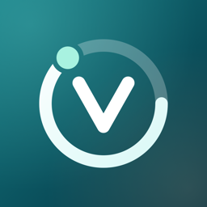

Vialog
Your injection routine, recorded in your own words.
Vialog on the App StoreA private iPhone journal for people who already follow an injection routine: what you used, how much, when, where, and how you felt. You bring the names, the quantities and the schedule. Vialog keeps the record.
A personal record. This app does not recommend products or changes to treatment. It never selects anything, calculates a dose, or suggests a change.
What Vialog does
- Keeps your routines. Name each one yourself, set the times and the planned amount, in the units you already use. Nothing is looked up, suggested or converted.
- Reminds you. A reminder at each scheduled time, delivered by iOS on the device. By default it says only that you have a scheduled entry; the routine's name and amount appear on the lock screen only if you turn that on.
- Records in seconds. Confirm the amount, pick a site if you like, add a note. Past sites stay visible so you can see where you have been.
- Keeps a journal. Check-ins on energy, sleep and appetite, symptoms in your own words, and weight, on any day, kept apart from your routines unless you link them.
- Shows your history. Every record by day, with filters, and a chart of what you recorded over time.
- Counts what you hold, if you ask it to. Enter the amount you have on hand and see what it covers, counted down by your own records. It reports a count and a day; it never prompts you to obtain anything.
- Leaves with you. Export everything as CSV or a PDF report, back up to a single file, restore it on a new phone, or delete it all.
Private by design
No account. No sign-in. No ads, no analytics, no tracking. Your records are stored on your iPhone, shown on your Apple Watch if you use the watch app, and Vialog has no server to send them to. Optional App Lock asks for Face ID, Touch ID or your passcode before the app opens and shows a blank cover in the app switcher. Read the privacy policy.
Get in touch
Questions, bug reports and requests are all welcome. Email csergay@gmail.com and you will get a reply.
It helps to include your iOS version, the Vialog version and build from Settings, and what you were doing when something went wrong.
Common questions
- Where are my records stored?
- On your iPhone, in the app's own storage, protected by the device passcode. If you back up your phone to iCloud or a computer, the app's data is part of that backup under Apple's terms. Nothing is kept anywhere else.
- Does Vialog tell me what to take or when?
- No. It records the routine you already follow, in the amounts and at the times you enter. It never selects a product, calculates a dose, suggests a site or recommends a change. If something about your routine should change, that is a conversation with the person who prescribes it.
- What is free, and what does Vialog Pro add?
- Recording, reminders, the journal, history, sites, App Lock, CSV export, backup, restore and deleting are free and stay free. Vialog Pro is a single purchase, not a subscription, and adds four things: more than three active routines, the amount on hand, Review (your records on one time axis over any range; the last 30 days stay free in the Journal), and the PDF report. Anything you already have keeps working whether or not you buy it.
- I bought Vialog Pro. How do I get it back on a new phone?
- Open Settings inside Vialog, then Vialog Pro, and tap Restore purchases, signed in with the same Apple Account you bought it with. Family Sharing is on, so people you share purchases with get it too. Your records are separate: move them with a backup file, or through an iPhone backup.
- A reminder did not arrive.
- Reminders are delivered by iOS, and delivery is not guaranteed. Check that notifications are allowed for Vialog in iOS Settings, and that a Focus mode is not holding them. Vialog's own Settings show how many reminders are registered and the date they are covered until.
- Why does the reminder not say which routine it is?
- Because the lock screen can be read by anyone who can see the phone. The default reminder says only that you have a scheduled entry. If you would rather see the routine's name and amount there, turn on Show routine name and quantity in Settings.
- Can I change or remove a record?
- Yes. Open the record from Today or the Journal to correct its amount, time, site or note, or to remove it. A removed scheduled entry goes back to "not logged". Every change is kept as a revision.
- Why is a unit never converted?
- Because a conversion depends on a strength Vialog does not know and should not assume. Amounts are kept exactly as you typed them, in the unit you chose, and a record in a different unit is shown as such rather than folded in.
- How do I delete everything?
- Settings, then Export and backup, then Delete all records. Removing the app also removes everything it stored. There is nothing held elsewhere to ask for.